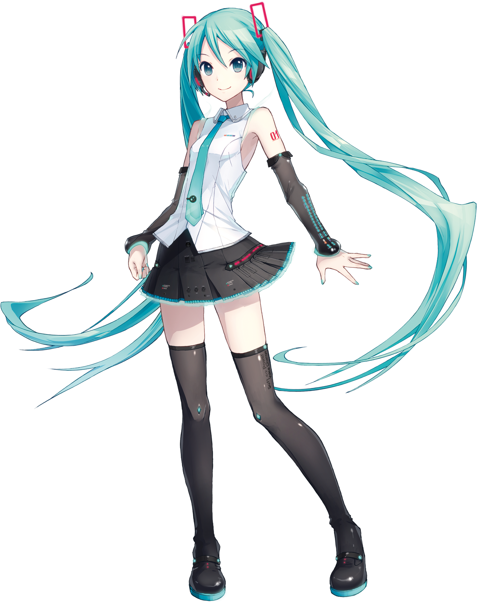
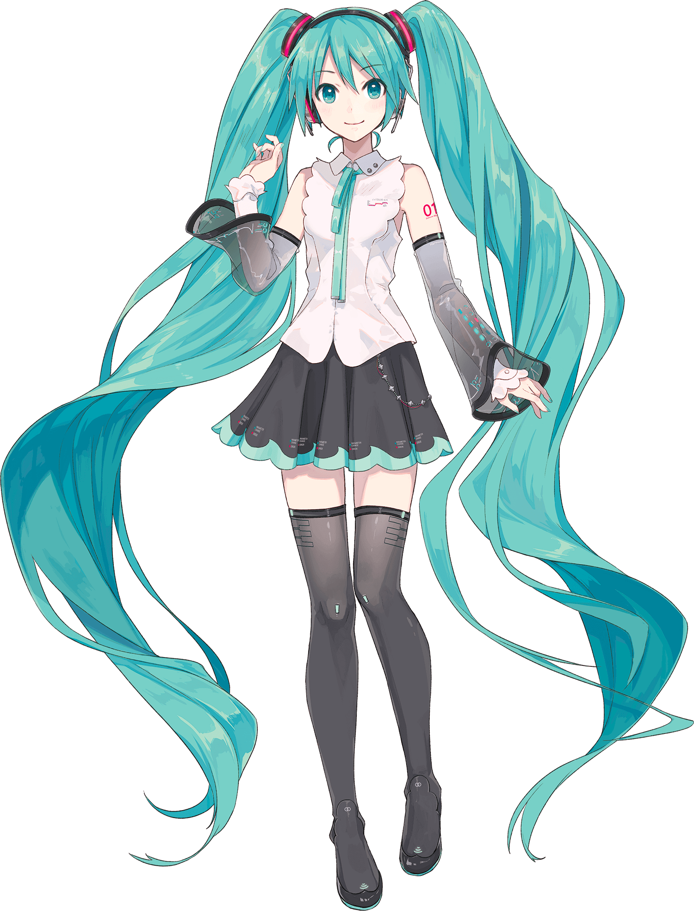
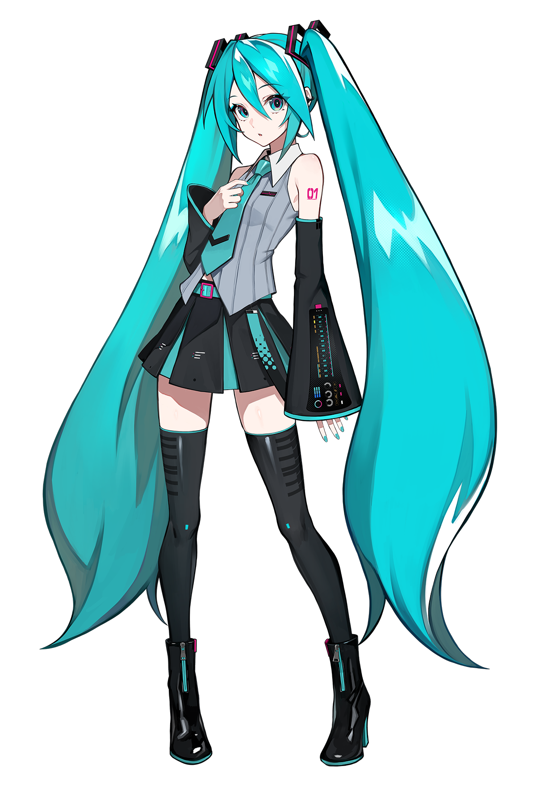

Tradičná
Miku V2
Ikonická Miku prvej generácie z roku 2007, bez kompromisov.


Jedno je isté, s Hatsune Miku budeš mať vždy na výber. A vždy to bude to pravé "Miku". Modré vlasy aj modrá kravata. V tvojej Wi-Fi aj v tvojej hlave rent-free.
Ikonická Miku prvej generácie z roku 2007, bez kompromisov.

S technológiou E.V.E.C. a vyváženým akustickým výkonom.

Bez závislosti od Yamaha ekosystému.

Umelá inteligencia pre dokonalý vokálny zážitok.
| Kľúč | Hodnota |
|---|---|
| Kanonický vek | 16 rokov |
| Kanonická výška | 158 cm |
| Vzorkovacia frekvencia | 44.1 kHz |
| Bitová hĺbka | 16 bitov na vzorku |
| Taktová frekvencia | 3.9 GHz |
| TDP | 65 W |
| Rozsah | A2 - E5 |
| Tempo | Optimalizované pre 70 - 240 BPM bez potreby kyslíka |
| Odozva | 0 ms |
| Dýchanie | žiadne |
| Aerodynamické stabilizátory | dvojité copy (twin-tails) |
| Farba vlasov | tyrkysová - #39c5bb |
| Obľúbená zelenina | Pór |
Áno.
Lebo Hatsune Miku je lepšia než Kasane Teto.
Rešpektujeme ich právo nemať pravdu. Môžu si založiť vlastnú stránku. A dať si tam francúzske bagety a Mesmerizer.
Odstúpiť z trónu.
V rámci našej ekologickej iniciatívy pre zníženie uhlíkovej stopy nie je pór súčasťou balenia. Môžete použiť akýkoľvek štandardný pór zakúpený v miestnych potravinách.
Nie. Absencia pľúc umožňuje Hatsune Miku spievať 240 BPM pasáže bez prerušenia. Kyslík je pre amatérov.
Tento stav je považovaný za funkciu, nie chybu. Reklamácie z dôvodu neustáleho znenia "I'm thinking Miku, Miku (oo ee oo)" neakceptujeme.
Možno áno, možno nie. :3
Ak nie je, mal by byť.